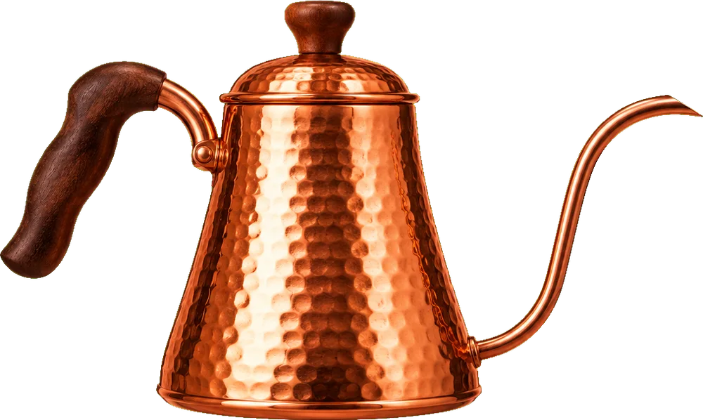
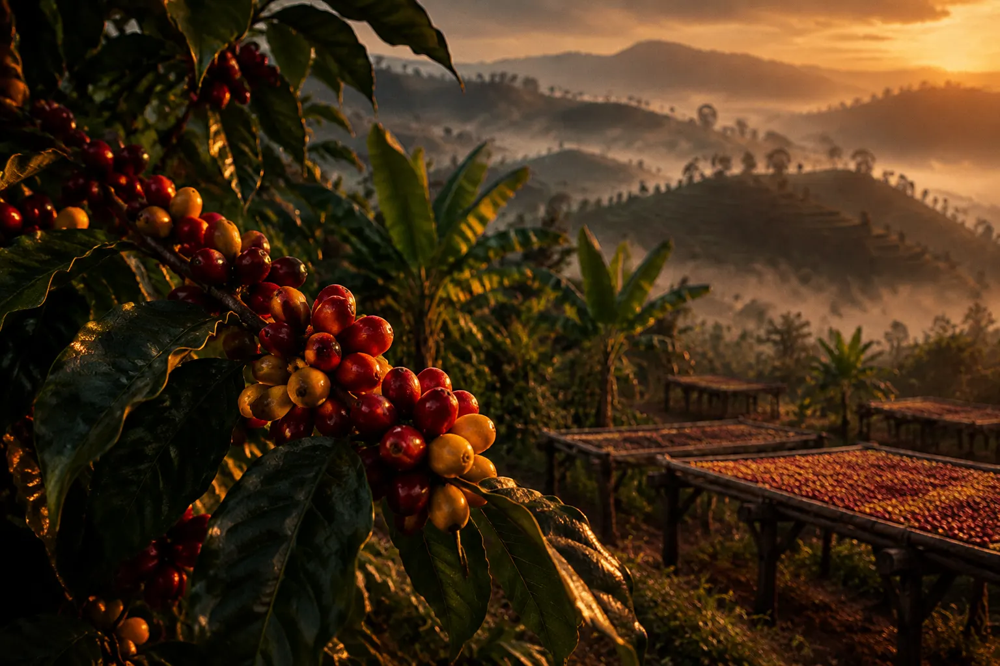
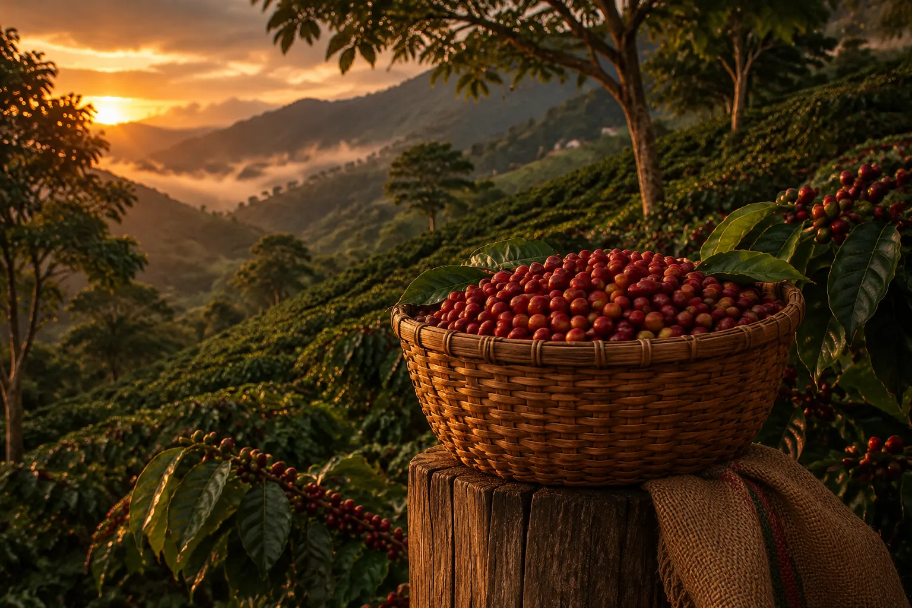
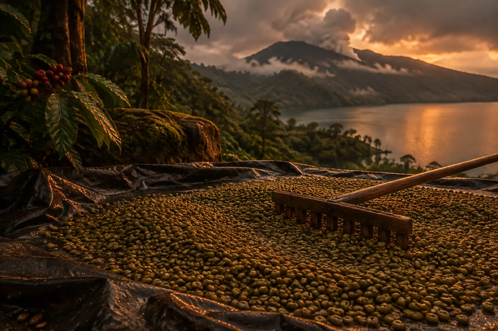
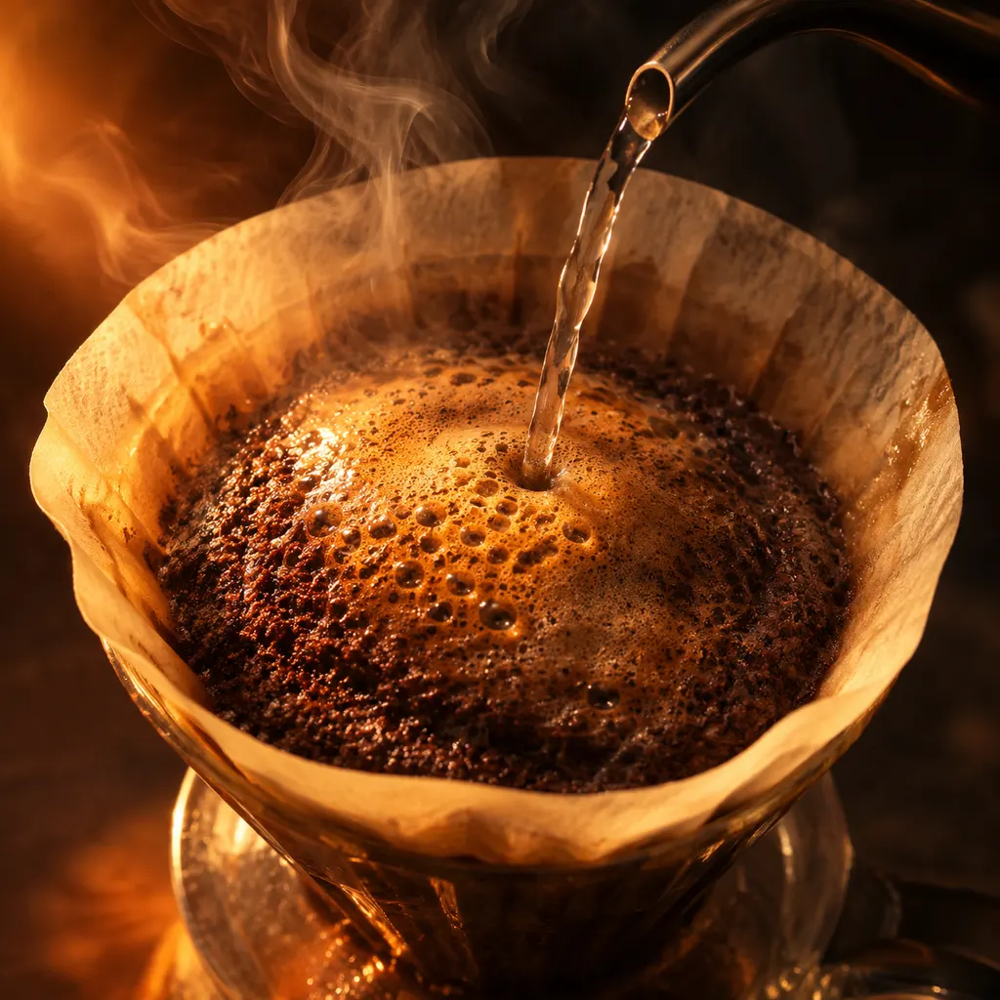

94°C
Just off the boil. Any hotter scorches a light roast; any cooler leaves the sweetness stuck in the bed.
Small-lot single origins, roasted every Thursday in a 1962 drum roaster beside our Bristol bar, and posted while the bags still smell of the fire.
94°C
Just off the boil. Any hotter scorches a light roast; any cooler leaves the sweetness stuck in the bed.
0:45
The bloom. Fresh grounds sigh out their carbon dioxide. Rush it and the water runs straight past the flavour.
3:00
The drawdown. Whatever lands in the cup is everything the farm put into the cherry, nothing added.
Keep scrolling to pour

Hover the crema to etch it. Press and drag to pour milk.
We buy whole lots from three farms and one co-operative, and visit each one at harvest. These are the people behind this season's pours.

01
Gedeo Zone, Ethiopia
Chelelektu washing station sits on a ridge where some eight hundred smallholders walk their cherries in at dusk. Every lot is floated, the light cherries skimmed off, then fermented for thirty-six hours before two weeks on raised beds under shade netting. It tastes the way the hillside smells after rain.

02
Huila, Colombia
Adriana Muñoz farms six hectares outside Pitalito with her two brothers. Her Pink Bourbon is picked in three passes so only the ripest cherry goes in, then fermented in sealed tanks for forty hours. We have bought her whole lot three years running, at a price she sets.

03
Lintong, North Sumatra
Around Lake Toba the coffee is hulled while it is still wet, a method born of monsoon humidity called giling basah. It gives Lintong its deep, cedary body. The Dolok Sanggul co-operative dries the parchment on tarps between the rains and hulls it the same afternoon.
15 g coffee, ground like coarse sea salt. 250 g water at 94°C. A V60, a scale, three minutes.

0:000 g
Pour 45 g in a slow spiral and give the dripper one gentle swirl. Wait while the bed puffs and breathes.
Coin-sized circles up to 150 g. Keep the stream thin and close to the bed.
Straight down the centre to 250 g. A steady pour pushes the grounds off the paper walls.
One last swirl so the bed settles flat. It should drain by three minutes; if not, grind a touch coarser tomorrow.
Give it two minutes. The fruit only really shows once the cup drops below sixty degrees.
The Standing Order: freshly roasted bags on your doormat, timed to land a day before you run out. Pause, skip or switch origins whenever you like.